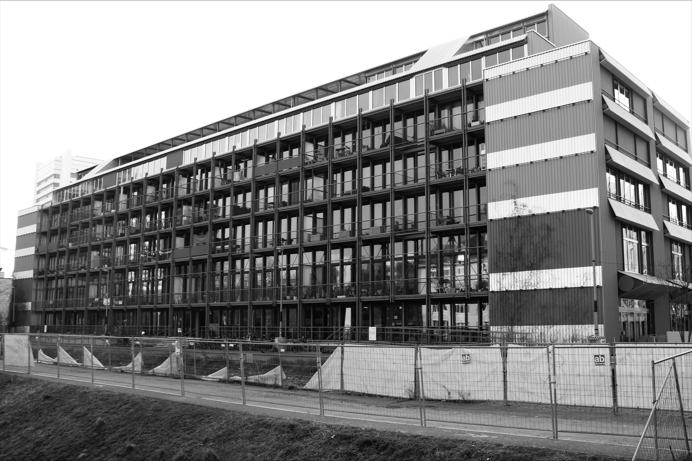

Nutzung
Die ursprüngliche Funktion des Gebäudes bestand in den 1950er Jahren in der Lagerung von Wein. In den 1970er Jahren wurde das Weinlager zu einem Verteilerzentrum umgenutzt, von dem aus Wein aktiv weitertransportiert und an verschiedene Orte verteilt wurde.
Im Laufe der Zeit entstand der Wunsch, das Gebäude erneut umzunutzen. Heute beherbergt es vielfältige Mietwohnungen, Gewerberäume, ein Café und eine Pizzeria. Die Transformation wurde zwischen 2020 und 2023 realisiert und vom Architekturbüro Esch Sintzel Architekten aus Zürich begleitet [26][27]. Damit wurde aus einem ehemaligen Zweckbau ein gemischt genutztes Gebäude, das Wohnen, Arbeiten und alltägliches städtisches Leben miteinander verbindet.

Nachhaltigkeit
Im Wohnhaus Weinlager zeigt sich Nachhaltigkeit in mehreren Bereichen. Im Zentrum steht die Wohnnutzung. Durch die Begrenzung der Energiebezugsfläche auf 45 m² pro Person wird ein ressourcenschonender Umgang mit Raum gefördert. Die Stiftung Habitat achtet damit darauf, dass die Wohnfläche in einem angemessenen Verhältnis zur Anzahl der Bewohnenden steht. Zudem wurden die Wohnungen barrierefrei und altersgerecht gestaltet, um eine durchmischte Mieterschaft zu ermöglichen und damit die soziale Nachhaltigkeit zu stärken.
Auch in ökologischer Hinsicht ist das Projekt bemerkenswert. Da es sich bei der Umgestaltung um eine Renovation und nicht um einen Neubau handelt, konnten zahlreiche Ressourcen eingespart werden. Der Weiterbau am Bestand zeigt, wie sich bestehende Architektur nachhaltig weiterentwickeln lässt.
Ein weiterer zentraler Aspekt betrifft die Energienutzung des Gebäudes. Ein grosser Teil des Energie- und Wärmebedarfs wird durch Eigenproduktion gedeckt, unter anderem mit einem Grundwasserbrunnen in Kombination mit einer Wärmepumpe. Aufgrund der konstanten Temperatur des Grundwassers benötigt dieses System im Winter weniger Energie als eine Luft-Wärmepumpe. Im Sommer dient das Grundwasser zudem zur Kühlung der Räume. Zusätzlich tragen Jouliaduschen zu einem wärmesparenden Effekt bei. Diese funktionieren mit einem Wärmetauscher im Abfluss, der die Abwärme des verbrauchten Duschwassers nutzt, um das nachströmende Frischwasser vorzuwärmen. In einem Vierpersonenhaushalt können dadurch pro Jahr rund 1000 kWh Energie eingespart werden [26][34].
Architektonische Bedeutung
Dass das Gebäude früher ein Lagerhaus war, ist heute nur noch bedingt erkennbar. Einzelne Elemente wie die markanten Betonstützen und die Metallfassade des ehemaligen Lagerhauses sind jedoch erhalten geblieben und erinnern an die industrielle Vergangenheit. Gleichzeitig zeigen die tragenden Holzstützen, dass Funktionalität weiterhin eine wichtige Rolle spielt.
Architektonisch wurde das ehemals grosse und eher massive Gebäude bewusst transformiert. Durch Balkone und zahlreiche Fenster wirkt es heute leichter, offener und stärker auf den menschlichen Massstab ausgerichtet. Im Inneren steht nicht mehr die Logik des Lagers im Vordergrund, sondern der Mensch. Die Räume sind so gestaltet, dass sie Wohnlichkeit, Geborgenheit und Lebendigkeit vermitteln [26].
Bilder